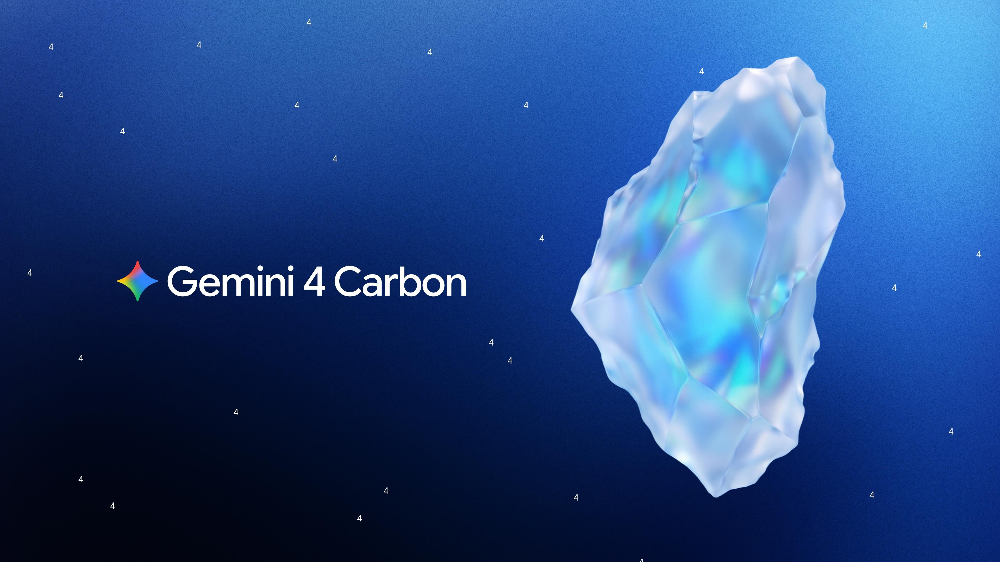

10 ноября Google DeepMind объявила о доступности Gemini 4 Carbon — самой мощной модели линейки для разработчиков, компаний, учёных и обычных пользователей. Модель «прощупывала границы» две недели в закрытой программе Fairwind для защитников-кибербезопасников, а теперь выходит в API Google AI Studio и Gemini for business по intro-цене предыдущей Gemini 4 Argon: $2 за миллион входных токенов и $10 за миллион выходных. Подписчики Google AI Ultra получают модель в Antigravity, приложении Gemini и AI Mode в поиске.
Google заявляет первое место на CursorBench 4.0, WANDR от Perplexity и AutomationBench от Zapier при стоимости за задачу более чем вдвое ниже ближайшей внешней модели. В новом бенчмарке MKA (многомодальная агентская работа с документами, сделанном вместе с Artificial Analysis) Carbon вторая, но в среднем более чем в шесть раз дешевле лидера. Для сложных задач Carbon тратит заметно больше токенов, чем Argon: модель «думает» длиннее и прогоняет проверочные циклы, Argon же остаётся рабочей лошадкой для повседневной разработки.
Главная «фишка» — /swarm в Google Antigravity: один запрос превращается в согласованную команду агентов, которых можно строить в реальном времени; Carbon ставят на архитектурные роли, а параллельную работу выполняют более лёгкие модели с «враждебными» проверяльщиками. В безопасности Carbon ведёт на бенчмарках поиска уязвимостей (SEC-bench Pro), их эксплуатации (ExploitGym) и заплаток (CWE-bench v1). Внутренняя система Project Fortify даёт на ней 100% recall при сканировании и 95% precision при триаже, а команда Wiz в программе Scan for Good находила реальные 0-day в публичной инфраструктуре менее чем за два часа — там, где раньше уходили недели ресёрча.
В научном блоке Google показывает, как Carbon вместе с AlphaProof Code математически доказала ключевые свойства безопасности протокола Signal — генерацией миллионов строк на Lean за недели вместо лет ручной работы (об этом мы уже рассказывали отдельно). Для фармакологической компании Axiom Bio Carbon стала лучшей моделью в трансляционной науке, находя новые механизмы токсичности лекарств.